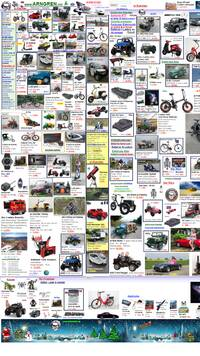
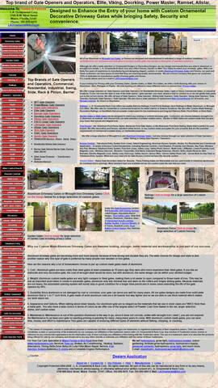

White Space and Clean Design
Yale School of Art
art.yale.eduI chose the website for Yale School of Art because of its poor use of padding and white space. In the screenshot, we can see that the school's address is split between several elements. Each element (spans with breaks) has no padding between the text and the perimeter of the element. The headline, Yale School of Art, does not have any padding between the text the perimeter. Another poor example is the sidebar menu and text area on the left side of the page. The lack of padding is very distracting to me. It feels like I have to concentrate very hard on reading the words on the webpage. There is space between some of the elements but the background color makes it look like there is no spacing. The line spacing is not wide enough which limits the white space within the text areas. If I had a choice, I would leave this website immediately. In my opinion, this website reflects poorly on the Yale School of Art.
Proximity
Arngren
arngren.net This is a Norwegian e-commerce website which appears to be mixture of Craig's List and a promotional flyer for a store like Harbor Freight. This is a very poor example of proximity. There is no space between the images or other elements. It is hard to determine which direction the author of the page intended the user to read. It is also hard to tell which prices are for what item. The layout of the page does encourage me to purchase anything. It seems like someone just randomly dropped images onto on a webpage and filled some gaps with a little text. It also has no white space which is part of proper use of proximity.
Contrast
Gates N Fences
gatesnfences.com The Gates N Fences website is good example of poor contrast. It is hard to see, but the middle photo of the three gates has text within the boundaries of the photo. The font is small and white with the photo as a background. Some of the text is on the light area of the photo causing poor contrast between the font and photo. The Wave tool states that the contrast is 2.46:1 for the photo and text. This font appears to be smaller than 14 so the contrast requirement would be 4.5:1. In my opinion, they need to remove the text from the photo and create a figure caption element to store the text for each photo. The font size needs to be increased. The contrast for the buttons on the left side bar needs to be improved. The background of the buttons have a light streak that causes poor contrast between the button and the text.